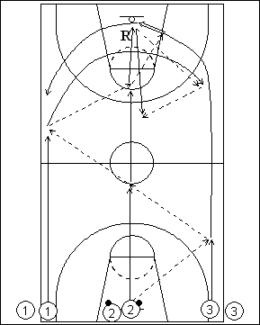

Catégorie : FASTBREAK (Fb-012)
Déroulement
- Trois files de joueurs à une baseline. Les ballons sont dans la file du milieu.
- La première passe se fait toujours du même côté du terrain (ici, vers le côté droit en allant et vers le gauche en revenant). On effectue 5 passes lors de chaque traversée. Ici donc, le premier joueur de la file 2 passe au premier de la file 3 qui lui remet le ballon; 2 prolonge vers le premier joueur de la file 1 qui lui rend le ballon; passe de 2 pour un lay-up de 3. Les ailiers croisent et on effectue le même travail au retour après rebond de 2 avec des passes de 2 à 1, 1 à 2, 2 à 3, 3 à 2 et 2 à 1 pour un lay-up.
- On réalise trois fois l’aller-retour, puis le groupe suivant démarre.
Coaching points
- Soigner toutes les composantes de la contre-attaque : vitesse du rebond et de la première passe, passes en mouvement, travail dans les couloirs, vitesse d’exécution.
- Insister sur la réussite des six lay-ups (sanctions ?).